Model Solution Matrices
Describe and retrieve the state-space form of a solved model. IRIS uses a state-space form with two modifications. First, the state-space system is transformed so that the transition matrix is upper triangular (or more precisely, quasi-triangular with 1-by-1 or 2-by-2 blocks on the main diagonal). Second, the effect of future anticipated shocks can be directly computed upon request, and added to the system stored in the model object.
Contents
Clear Workspace
Clear workspace, close all graphics figures, clear command window, and check the IRIS version.
clear close all clc irisrequired 20180131
Load Solved Model Object
Load the solved model object built in read_model.
load mat/read_model.mat m;
First Order Solution (State Space)
The function solve( ) executed earlier in read_model computes the first-order accurate state-space representation of the model. IRIS uses a transformed representation that has a number of advantages.
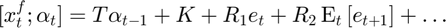
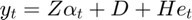
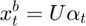
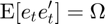
- 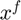 non-predetermined (forward-looking) variables;
- 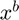 predetermined (backward-looking) transition variable;
- 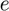 residuals;
- 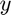 measurement variables;
- 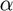 vector of transformed pre-determined variables;
- 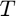 transition matrix; the transformed vector is set up so that is upper quasi-triangular -- see next section.
[T, R, K, Z, H, D, U, Omg] = sspace(m); %#ok<ASGLU> disp('State-space matrices'); disp('Size of T'); sizeOfT = size(T) %#ok<NOPTS> disp('Size of R'); sizeOfR = size(R) %#ok<NOPTS> disp('Size of K'); size(K) disp('Size of Z'); size(Z) disp('Covariance matrix of residuals'); Omg %#ok<NOPTS>
State-space matrices
Size of T
sizeOfT =
24 13
Size of R
sizeOfR =
24 7
Size of K
ans =
24 1
Size of Z
ans =
4 13
Covariance matrix of residuals
Omg =
1.0e-04 *
0 0 0 0 0 0 0
0 0 0 0 0 0 0
0 0 0.9901 0 0 0 0
0 0 0 0.9901 0 0 0
0 0 0 0 0.0100 0 0
0 0 0 0 0 0.9901 0
0 0 0 0 0 0 0.9901
Transition Matrix
The transition matrix T can be divided into the upper part Tf (which determines the non-predetermined variables) and the square lower part Ta (which determines the vector alpha). The matrix Tf is in general rectangular, nf-by-|nb|, whereas Ta is a sqaure matrix, nb-by-|nb|. The dynamics of the model is solely given by Ta; the transformation alpha is chosen so that Ta is always upper quasi-triangular.
The number of non-predetermined (forward-looking) variables and the number of predetermined (backward-looking) variables (which equals the size of the vector ) can be derived from the size of the matrix T.
nx = size(T, 1); nb = size(T, 2); nf = nx - nb; disp('Size of transition matrix T') sizeOfT %#ok<NOPTS> disp('Length of vector x') nx %#ok<NOPTS> disp('Length of vector xf') nf %#ok<NOPTS> disp('Length of vector xb (and alpha)') nb %#ok<NOPTS> Tf = T(1:nf, :); Ta = T(nf+1:end, :); figure(); spy(Ta); title('Nonzero entries in lower transition matrix'); disp('Unit roots in model solution') unitRoots = get(m, 'unitRoots') %#ok<NOPTS> nUnit = length(unitRoots); Ta(1:nUnit, 1:nUnit)
Size of transition matrix T
sizeOfT =
24 13
Length of vector x
nx =
24
Length of vector xf
nf =
11
Length of vector xb (and alpha)
nb =
13
Unit roots in model solution
unitRoots =
1.0000 1.0000
ans =
1.0000 0.0000
0 1.0000
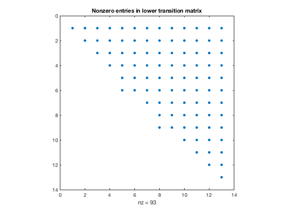 Variables in State Space Vector
Find out the order in which the individual variables occur in the rows and columns of the state-space matrices. The vector of measurement variables and the vector of shocks are straightforward -- they are ordered as they are declared in the model code (with the measurement shocks preceding the transition shocks). The vector of transition variables contain also all auxiliary lags and leads.
disp('Vector of transition variables (x)') xvector = get(m, 'XVector') %#ok<NOPTS> disp('Vector of measurement variables (y)') yvector = get(m, 'YVector') %#ok<NOPTS> disp('Vector of shocks (e)') evector = get(m, 'EVector') %#ok<NOPTS>
Vector of transition variables (x)
xvector =
24x1 cell array
{'log_dP{+3}'}
{'log_dP{+2}'}
{'log_dP{+1}'}
{'log_N' }
{'log_Q' }
{'log_H' }
{'log_Pk' }
{'log_Rk' }
{'log_Lambda'}
{'log_d4P' }
{'log_RMC' }
{'log_Y' }
{'log_W' }
{'log_A' }
{'log_dA' }
{'log_P' }
{'log_R' }
{'log_dP' }
{'log_dW' }
{'log_Y{-1}' }
{'log_W{-1}' }
{'log_P{-1}' }
{'log_P{-2}' }
{'log_P{-3}' }
Vector of measurement variables (y)
yvector =
4x1 cell array
{'Short' }
{'Infl' }
{'Growth'}
{'Wage' }
Vector of shocks (e)
evector =
7x1 cell array
{'Mp'}
{'Mw'}
{'Ey'}
{'Ep'}
{'Ea'}
{'Er'}
{'Ew'}
Forward Expansion of Model Solution
Forward expansion of the solution is needed in simulations or forecasts with future anticipated shocks. Use the function expand( ) to calculate and store the expansion in the model object. Alternatively, if not available, the expansion is automatically added whenever the functions simulate( ) or jforecast( ) are executed with future anticipated shocks.
k = get(m, 'forward'); disp('Solution is now expanded t+k periods forward') k %#ok<NOPTS> m = expand(m, 2); disp('Solution is now expanded t+k periods forward') k = get(m, 'Forward') %#ok<NOPTS> [T, R, K, Z, H, D, U, Omg] = sspace(m); disp('Size of the matrix R before expansion') sizeOfR %#ok<NOPTS> disp('Size of the matrix R after expansion') size(R)
Solution is now expanded t+k periods forward
k =
0
Solution is now expanded t+k periods forward
k =
2
Size of the matrix R before expansion
sizeOfR =
24 7
Size of the matrix R after expansion
ans =
24 21
Show Variables and Objects Created in This File
whos
Name Size Bytes Class Attributes D 4x1 32 double H 4x7 224 double K 24x1 192 double Omg 7x7 392 double R 24x21 4032 double T 24x13 2496 double Ta 13x13 1352 double Tf 11x13 1144 double U 13x13 1352 double Z 4x13 416 double ans 1x2 16 double evector 7x1 812 cell k 1x1 8 double m 1x1 94388 model nUnit 1x1 8 double nb 1x1 8 double nf 1x1 8 double nx 1x1 8 double sizeOfR 1x2 16 double sizeOfT 1x2 16 double unitRoots 1x2 16 double xvector 24x1 3026 cell yvector 4x1 486 cell